01どの物件を
どの物件を
選べばよいかわからない
エリアや物件の情報は見つかるけれど、自分の予算や投資目的に合っているのか判断できない。
日本人・日本企業向けの
500人
以上No.1
200%
以上400億円以
上
100件以
上
50件以
上
50件以
上
説明を聞いて理解を深めたい方へ
1分でまずは資料で検討したい方へ
無料資料請求BEFORE YOUR INVESTMENT
エリアや物件の情報は見つかるけれど、自分の予算や投資目的に合っているのか判断できない。
物件価格以外に、どれくらいの費用が必要なのか。維持費や為替の影響も含めて資金計画を考えたい。
言語や商習慣が違うなかで、契約内容を理解し、必要な手続きを進められるか心配。
日本にいながら賃貸管理や現地のトラブルに対応できるのか。将来売却するときのことも確認しておきたい。
OUR STRENGTH
大切な資産の選択に
現地の知見と一貫した支援を。
EXCEEDが物件の検討からサポートします。
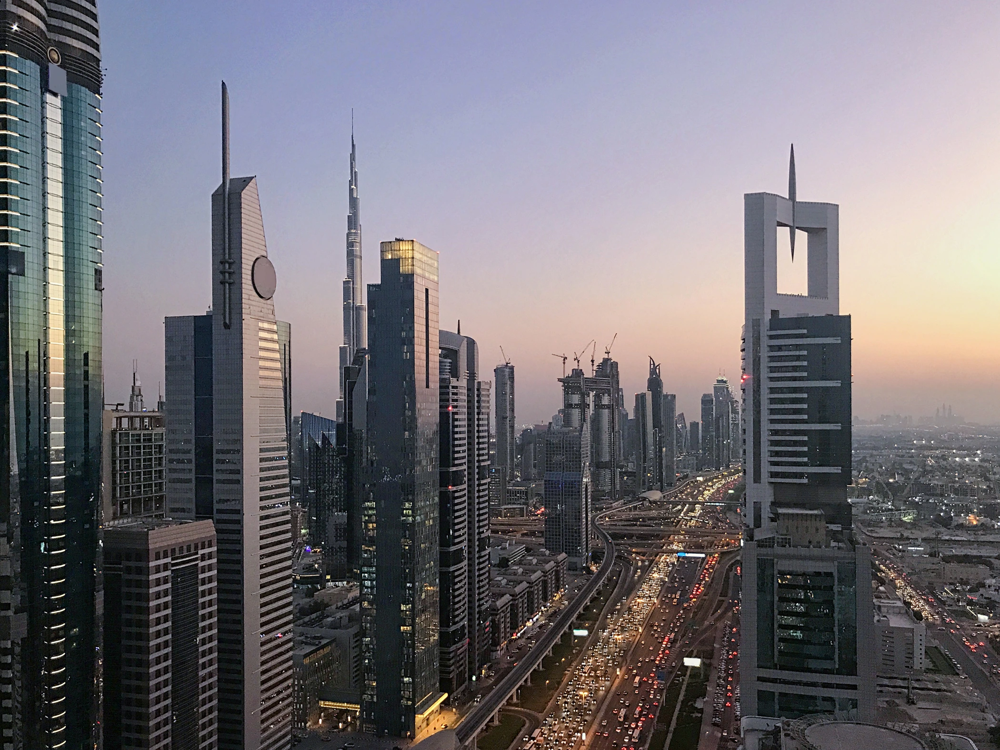
エリアや物件の情報は見つかるけれど、自分の予算や投資目的に合っているのか判断できない。
弁護士・税理士などの専門家と連携し、法律・税務に関するご相談を支援。法人設立や銀行口座の開設、移住ビザの取得までサポートします。
契約・引き渡しに加え、購入後の管理・賃貸、将来の売却まで支援。保有中のご相談にも対応し、購入後も継続してサポートします。日本からドバイへ投資をする方でも安心して始められます。
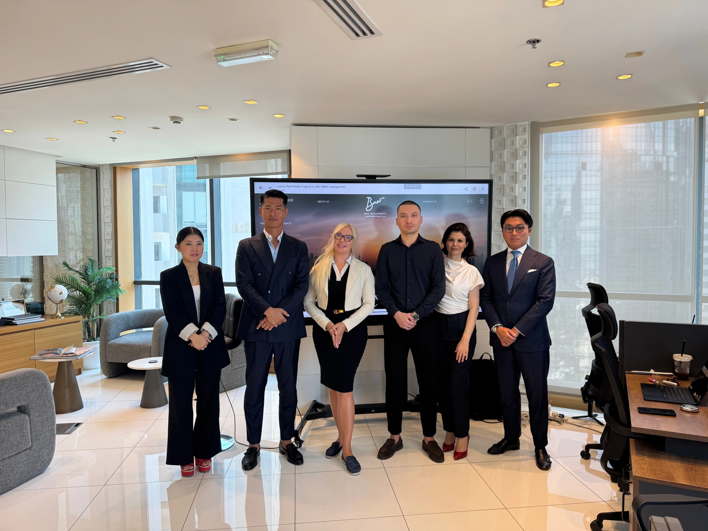
ドバイ在住の日本人エージェントが、現地スタッフと連携。物件の検討から購入手続きまで、日本語でご相談いただける体制を整えています。
WHY DUBAI
資産を持つ場所として
暮らしを描く場所として
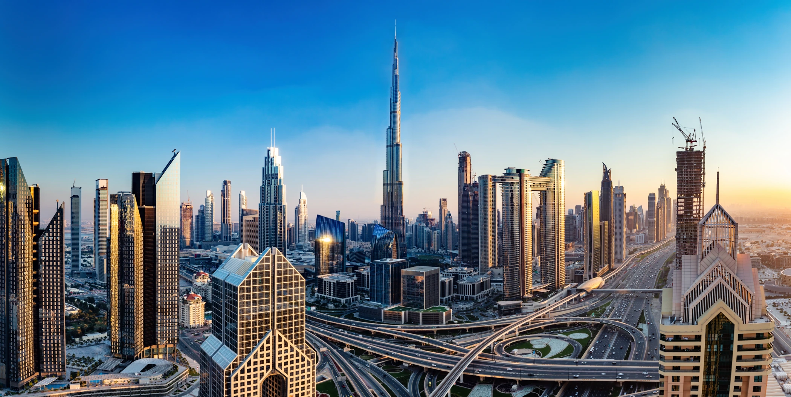
長期的な都市計画のもと、交通網や新たな住宅地の整備が進行。インフラ、新しいコミュニティ、大規模開発が都市の成長を続けています。
欧州・アジア・アフリカを結ぶ立地と航空網。海外との往来や、事業の拠点としての利便性も魅力です。
指定のフリーホールドエリアでは、外国人も不動産を所有できます。アパートからヴィラまで、多様な選択肢があります。
交通、医療、教育、ホテル、ビーチ、商業、レジャーが都市としての魅力を支えています。
説明を聞いて理解を深めたい方へ
1分でまずは資料で検討したい方へ
無料資料請求SELECTED PROPERTIES
ロケーションと建築から
ご自身に合う物件を
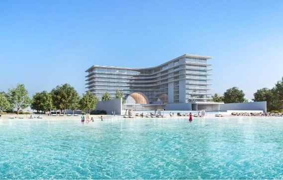
パーム ジュメイラ
安藤忠雄とジョルジオ・アルマーニ氏がコラボレーションした唯一無二の物件
AED 1,585,000 / $431,500
詳細を見る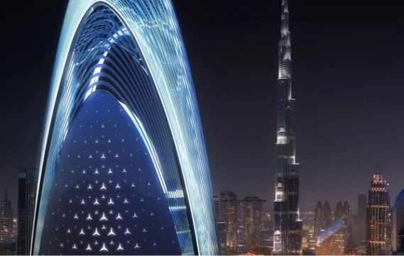
ダウンタウン ドバイ
ダウンタウンにそびえ立つメルセデスベンツタワー
AED 699,379 / $190,400
詳細を見る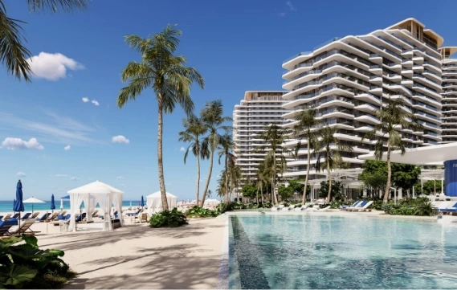
ミナ アル アラブ、ラアス アル ハイマ
カジノ開発エリアに建つ大規模リゾートアパートメント
AED 699,379 / $190,400
詳細を見る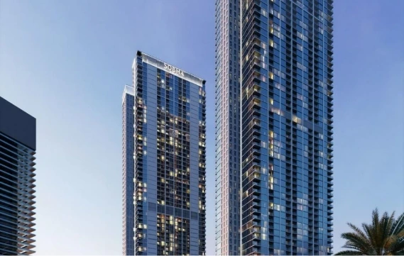
ショーバ ハートランド
大人気の総合開発ハートランドエリアに新たなツインタワー
AED 699,379 / $190,400
詳細を見る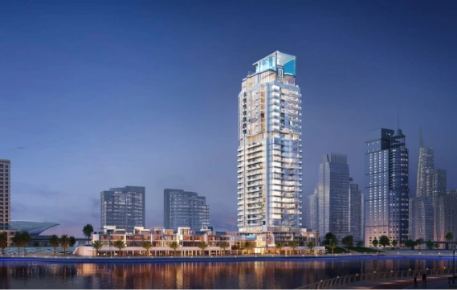
Dubai Marina
ドバイマリーナに25年完成予定のプライベートコミュニティ
AED 699,379 / $190,400
詳細を見る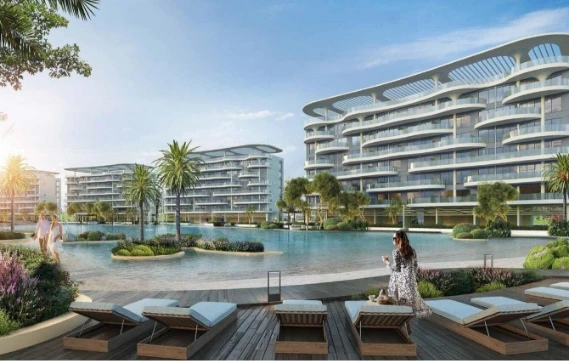
Damac Lagoons
リゾートエリアに建つラグーンを囲む低層アパートメント
AED 699,379 / $190,400
詳細を見る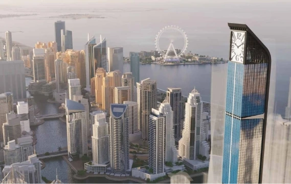
Dubai Marina
「世界一の時計台」フランクミュラータワー物件
AED 699,379 / $190,400
詳細を見る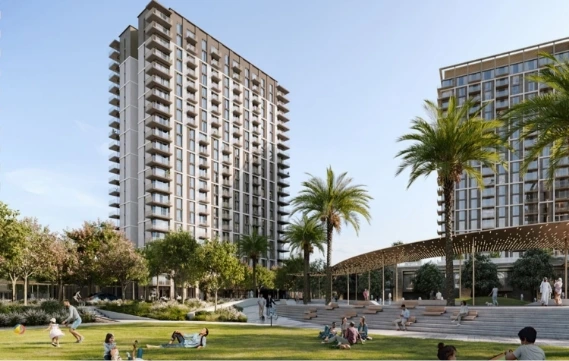
Dubai Creek Harbour
メトロ新駅から徒歩で5分のアパートメント
AED 699,379 / $190,400
詳細を見るSELECTED AREAS
街の個性から、理想のロケーションへ
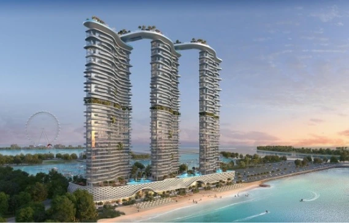
絶景のオーシャンビュー
海が一望できるドバイの贅沢物件
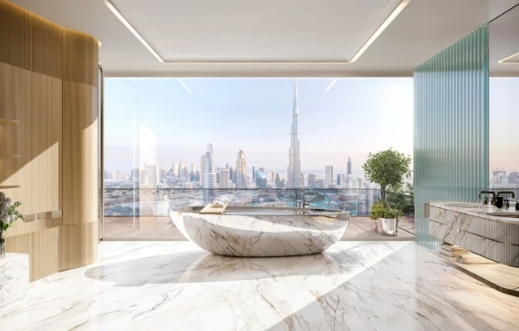
ドバイ中心部の一等地！贅沢な暮らしを叶える優雅な暮らし
詳細を見る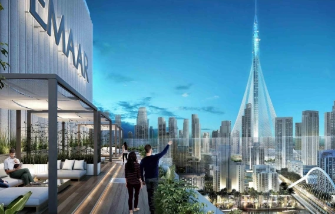
最新注目エリア！ 穏やかなスカイラインがあなたの日常を輝かせる
詳細を見る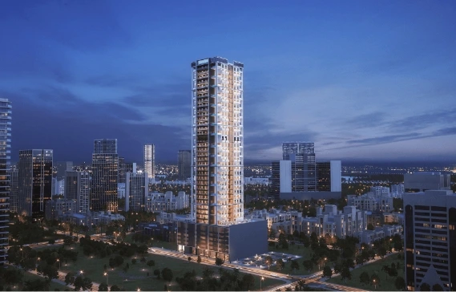
閑静な住宅街で人気高騰！注目の投資物件も急増中
詳細を見る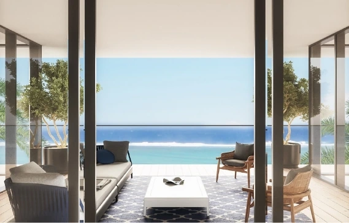
上品なリゾートライフを実現！海を望むドバイの贅沢物件がここに
詳細を見る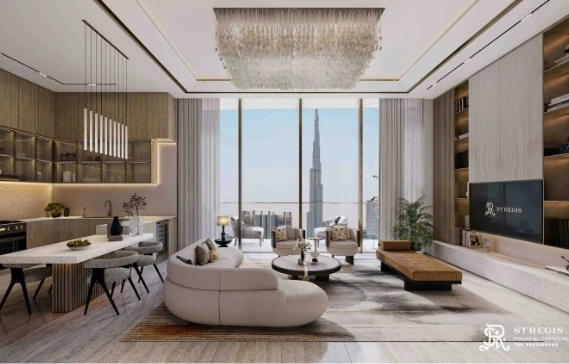
ブルジュハリファを眺める絶景エリアでシティライフを満喫！
詳細を見るCLIENT STORIES
お客様がEXCEEDを選んだ理由
物件選定から契約まで
全てワンストップで任せられる！
ドバイには以前から興味を持っていましたが、情報が少なく困っていました。
ドバイ不動産専門と聞き、
まずはEXCEEDさんのセミナーへ参加。
セミナー後、代表の嶋田社長とも面談。
EXCEEDさんの「ドバイの不動産に特化」「日本人スタッフでサポート」
「物件選定から契約までワンストップで支援」に惹かれ、
ドバイへの投資を決めました。

ソバ ハートランド 1LDK(66平米)
| 購入金額 | 49,200,000円 |
|---|---|
| 購入時期 | 2022年1月 |
| 支払金額 | 30,750,000円(購入金額の62.5%) |
| 売却時期 | 2024年1月 |
| 利益 | 1200万以上 (ROE 41.62%) |
ドバイ不動産セミナーに参加し、
不安がなくなりました
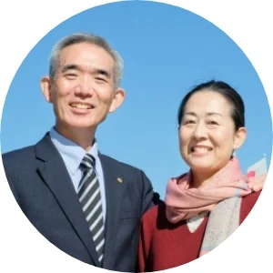
海外の不動産投資は、興味を持っていましたが、何から始めるべきかわかりませんでした。
知人の紹介で、EXCEEDさんの
ドバイ不動産への投資セミナーに参加。
説明が分かりやすく、またドバイの将来性をとても感じ、
投資することにしました。
投資後、資産価値が順調に値上がりし、
安心しています。
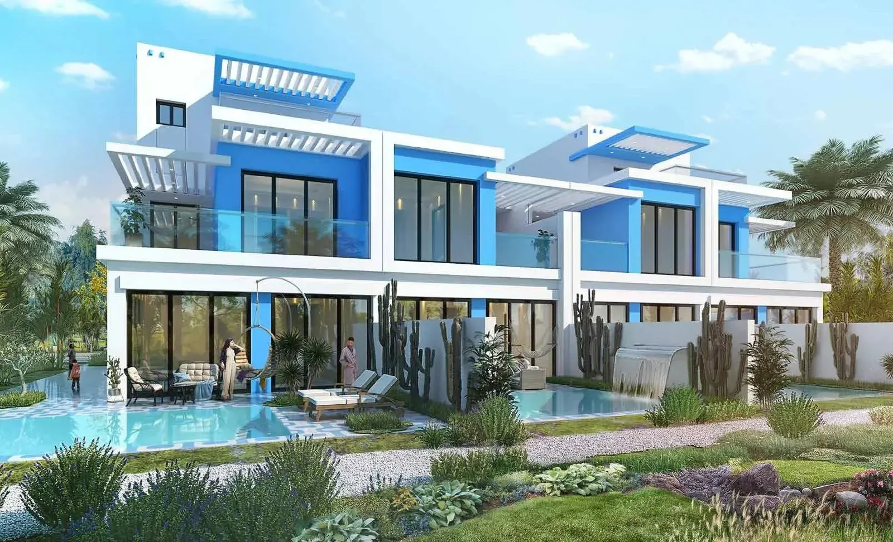
ダマックラグーン 4LDK(203平米)
| 購入金額 | 102,400,000円 |
|---|---|
| 購入時期 | 2022年1月 |
| 支払金額 | 40,960,000円(購入金額の40%) |
| 売却時期 | 2023年11月 |
| 利益 | 2500万円以上 (ROE 61.1%) |
CEO MESSAGE
平素より格別なるご高配をいただきまして、誠にありがとうございます。
CEOの嶋田輝雄です。
EXCEED REAL ESTATEは、
2023年にドバイ現地にいた複数人の日本人と
現地のプロによって設立されました。
私達は、ドバイ不動産の可能性を信じ、
2021年よりそれぞれが
個人で活動してきましたが、
今回晴れて法人化の運びとなりました。
各分野のプロフェッショナルが集結し、
決してドバイは海外だから仕方ない
ではなく、日本にいるのと同じ感覚で
お客様が不都合が生じないように
心掛けています。
現状に満足する事なく、今後もさらに価値を高められるよう
邁進してまいります。
OUR TEAM
ドバイ在住の日本人スタッフと
現地のプロがお客様をサポートします
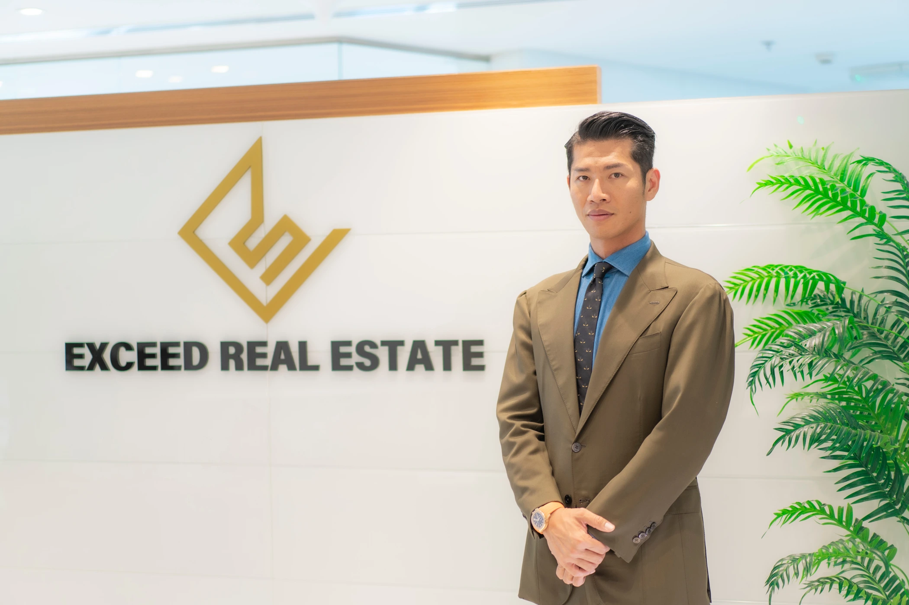
CEO
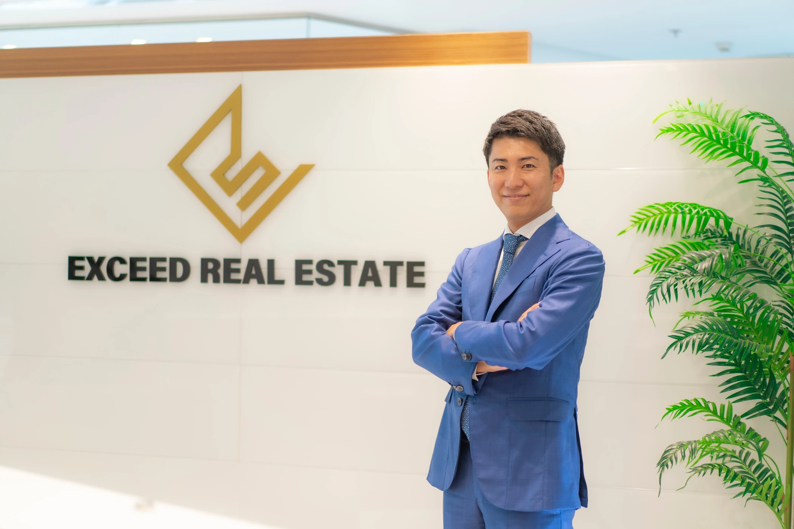
COO
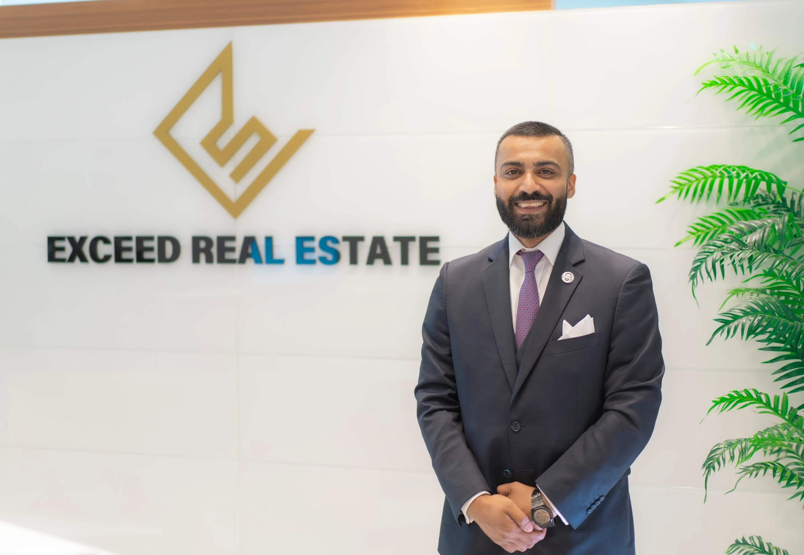
Vice President
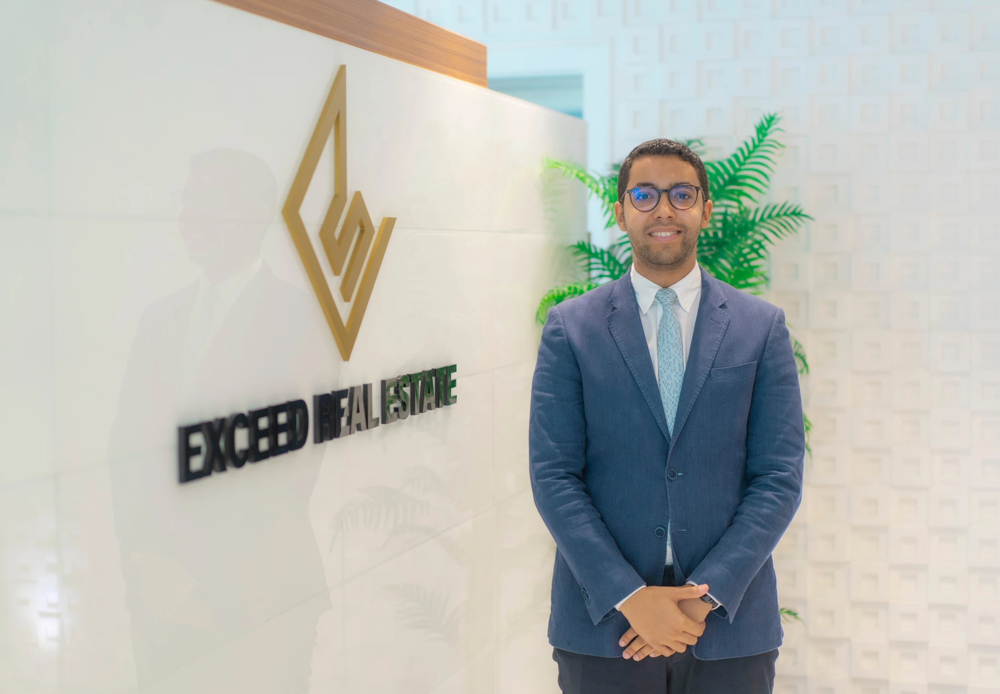
Sales Director
Sales Director
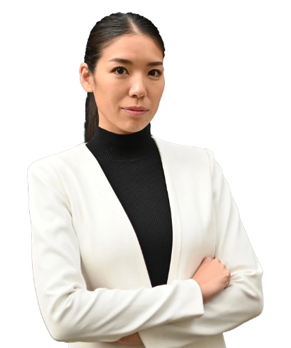
Sales Director
OUR PARTNERS
EMAAR、Sobhaをはじめとする
現地の大手デベロッパーと連携
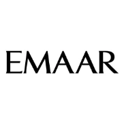
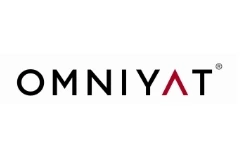
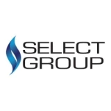
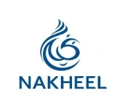
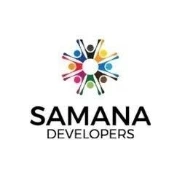
物件選びを支える、豊富な選択肢
2,000件以上
豊富な物件の中から
お客様に合う一件を厳選
説明を聞いて理解を深めたい方へ
1分でまずは資料で検討したい方へ
無料資料請求FAQ